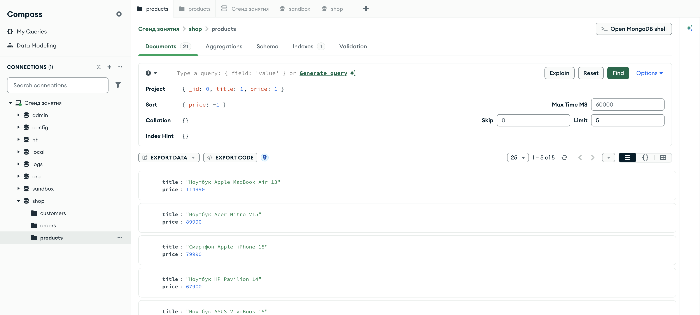

Справочник по MongoDB · модуль 1 · подключение и первые данные
Глава 1.6
Порядок
и порции
Данных всегда больше, чем помещается на экран. Разберём сортировку по одному и нескольким полям, ограничение выборки, постраничный вывод — и почему skip на большой коллекции работает всё медленнее с каждой страницей.
«Порядок, не заданный явно, не гарантирован.»
- Категория
- Операции над данными
- Уровень
- Начальный
- Связанные темы
- Курсор, индексы,
$sortв агрегации - Зачем это знать
- Показывать списки страницами и не выгружать коллекцию целиком
Как запускать примеры этой главы
lessons/ch1_6.py — пример вставляется в конец файлаlessons/ch1_6.rb — пример вставляется в конец файлаlessons/ch1_6.go — пример внутрь скобок в конце main, функции и типы — выше mainlessons/ch1_6.cpp — пример внутрь скобок в конце main, функции — выше maincd lessons, затем python ch1_6.pycd lessons, затем python3 ch1_6.py · в Docker: docker compose run --rm python lessons/ch1_6.pycd lessons, затем ruby ch1_6.rb · в Docker: docker compose run --rm ruby lessons/ch1_6.rbcd lessons, затем go run ch1_6.go · в Docker: docker compose run --rm go lessons/ch1_6.gocd lessons, затем g++ -std=c++17 ch1_6.cpp -o prog $(pkg-config --cflags --libs libmongocxx1) && ./prog · в Docker: docker compose run --rm cpp lessons/ch1_6.cppsandbox.bench на 20 000 документов — на ней замер из §6.§1sort: порядок задаётся явно
Метод sort вызывается у курсора и принимает поле и направление: 1 — по возрастанию, -1 — по убыванию.
for doc in products.find({}, {"_id": 0, "title": 1, "price": 1}) \ .sort("price", -1) \ .limit(5): print(f'{doc["price"]:>7} {doc["title"]}')
mongocxx::options::find options; options.projection(make_document(kvp("_id", 0), kvp("title", 1), kvp("price", 1))); options.sort(make_document(kvp("price", -1))); options.limit(5); for (const auto& doc : products.find(make_document(), options)) { std::cout << doc["price"].get_int32().value << " " << doc["title"].get_string().value << std::endl; }
cursor, _ := products.Find(ctx, bson.D{}, options.Find(). SetProjection(bson.D{{Key: "_id", Value: 0}, {Key: "title", Value: 1}, {Key: "price", Value: 1}}). SetSort(bson.D{{Key: "price", Value: -1}}). SetLimit(5)) var list []Product cursor.All(ctx, &list) for _, doc := range list { fmt.Printf("%8d %s\n", doc.Price, doc.Title) }
products.find({}, projection: { "_id" => 0, "title" => 1, "price" => 1 }) .sort({ "price" => -1 }) .limit(5) .each { |doc| puts format("%8d %s", doc["price"], doc["title"]) }
В mongosh направление задаётся тем же способом, но одним документом — в таком виде запрос и уходит на сервер:
db.products.find({}, { _id: 0, title: 1, price: 1 }) .sort({ price: -1 }) .limit(5)
Если в поле встречаются значения разных типов, сервер сортирует их в фиксированном порядке типов: сначала null, затем числа, затем строки, затем объекты, массивы, даты. Поэтому цена, записанная строкой "9990", окажется после всех чисел — включая 114 990. Это ещё одна причина следить за типами при записи.
§2Сортировка по нескольким полям
Когда первое поле совпадает, порядок решает второе. Список пар передаётся так:
cursor = products.find({}, {"_id": 0, "category": 1, "price": 1}) \ .sort([("category", 1), ("price", -1)])
// порядок ключей в документе сортировки и есть порядок применения mongocxx::options::find options; options.sort(make_document(kvp("category", 1), kvp("price", -1))); auto cursor = products.find(make_document(), options);
// bson.D сохраняет порядок ключей — для сортировки это обязательно cursor, _ := products.Find(ctx, bson.D{}, options.Find().SetSort(bson.D{ {Key: "category", Value: 1}, {Key: "price", Value: -1}})) defer cursor.Close(ctx)
cursor = products.find({}, projection: { "_id" => 0, "category" => 1, "price" => 1 }) .sort({ "category" => 1, "price" => -1 })
Читается слева направо: сначала группируются категории по алфавиту, внутри каждой — товары от дорогих к дешёвым. Порядок полей в списке важен: поменяете местами — получите совсем другой список.
И ещё одна тонкость, из-за которой ломаются постраничные списки: сортировка должна быть однозначной. Если сортировать только по категории, порядок внутри категории не определён и может отличаться от запроса к запросу: один и тот же товар покажется на двух страницах подряд или не покажется вовсе. Лечится добавлением уникального поля последним ключом: [("category", 1), ("_id", 1)].
§3limit: сколько вернуть
limit ограничивает число документов в ответе. Это не «показать первые N из уже полученных» — сервер действительно прекращает работу, набрав нужное количество.
events = client["logs"]["events"] for doc in events.find({"level": "error"}, {"_id": 0, "ts": 1, "service": 1, "status": 1}) \ .sort("ts", -1).limit(3): print(doc)
auto events = client["logs"]["events"]; mongocxx::options::find options; options.projection(make_document(kvp("_id", 0), kvp("ts", 1), kvp("service", 1), kvp("status", 1))); options.sort(make_document(kvp("ts", -1))); options.limit(3); auto cursor = events.find(make_document(kvp("level", "error")), options);
events := client.Database("logs").Collection("events") cursor, _ := events.Find(ctx, bson.D{{Key: "level", Value: "error"}}, options.Find(). SetProjection(bson.D{{Key: "_id", Value: 0}, {Key: "ts", Value: 1}, {Key: "service", Value: 1}, {Key: "status", Value: 1}}). SetSort(bson.D{{Key: "ts", Value: -1}}). SetLimit(3)) var rows []bson.D cursor.All(ctx, &rows) for _, doc := range rows { fmt.Println(doc) }
events = client.use("logs").database[:events] events.find({ "level" => "error" }, projection: { "_id" => 0, "ts" => 1, "service" => 1, "status" => 1 }) .sort({ "ts" => -1 }) .limit(3) .each { |doc| puts doc.inspect }
Пара «сортировка + предел» — самый частый запрос в интерфейсах: последние заказы, топ товаров, свежие ошибки. Без limit тот же запрос вытянет всю коллекцию, и на 1200 событиях вы этого не заметите, а на миллионе — заметите сразу.
§4skip: постраничный вывод
skip пропускает первые N документов. Вместе с limit он даёт страницы.
page, per_page = 2, 5 for doc in products.find({}, {"_id": 0, "title": 1}) \ .sort("title", 1) \ .skip((page - 1) * per_page) \ .limit(per_page): print(doc["title"])
int page = 2, per_page = 5; mongocxx::options::find options; options.projection(make_document(kvp("_id", 0), kvp("title", 1))); options.sort(make_document(kvp("title", 1))); options.skip((page - 1) * per_page); options.limit(per_page); for (const auto& doc : products.find(make_document(), options)) std::cout << doc["title"].get_string().value << std::endl;
page, perPage := int64(2), int64(5) cursor, _ := products.Find(ctx, bson.D{}, options.Find(). SetProjection(bson.D{{Key: "_id", Value: 0}, {Key: "title", Value: 1}}). SetSort(bson.D{{Key: "title", Value: 1}}). SetSkip((page - 1) * perPage). SetLimit(perPage)) var rows []bson.M cursor.All(ctx, &rows) for _, doc := range rows { fmt.Println(doc["title"]) }
page, per_page = 2, 5 products.find({}, projection: { "_id" => 0, "title" => 1 }) .sort({ "title" => 1 }) .skip((page - 1) * per_page) .limit(per_page) .each { |doc| puts doc["title"] }
Формула страницы всегда одна: skip = (номер страницы − 1) × размер страницы. Наглядно это выглядит так — серые документы сервер пропускает, зелёные отдаёт:
Важное слово здесь — «пропускает». Сервер не перепрыгивает сразу к шестому документу: он честно перебирает первые пять и выбрасывает их. На второй странице это ничего не стоит, на двухтысячной — стоит уже заметно.
§5Порядок применения
Методы курсора можно записывать в любой последовательности — результат от этого не изменится. Сервер всегда применяет их в одном порядке:
Поэтому .limit(5).sort("price", -1) и .sort("price", -1).limit(5) вернут одно и то же — пять самых дорогих товаров: сортировка выполняется до предела в обоих случаях. В агрегации стадии идут ровно в том порядке, в каком записаны, и там разница есть — глава 4.5.
§6Чем плох skip на больших данных
Проверим утверждение из §4 замером. Возьмём коллекцию на 20 000 документов и достанем десять последних двумя способами: пропуском и фильтром по «якорю» — последнему ключу с предыдущей страницы.
col.find({}, {"_id": 1}) \ .sort("_id", 1) \ .skip(19990).limit(10)
mongocxx::options::find options; options.sort(make_document(kvp("_id", 1))); options.skip(19990); options.limit(10); col.find(make_document(), options);
col.Find(ctx, bson.D{}, options.Find(). SetSort(bson.D{{Key: "_id", Value: 1}}). SetSkip(19990).SetLimit(10))
col.find({}, projection: { "_id" => 1 }) .sort({ "_id" => 1 }) .skip(19990).limit(10)
col.find({"_id": {"$gt": last_seen_id}}, {"_id": 1}) \ .sort("_id", 1) \ .limit(10)
mongocxx::options::find options; options.sort(make_document(kvp("_id", 1))); options.limit(10); col.find(make_document(kvp("_id", make_document(kvp("$gt", last_seen_id)))), options);
col.Find(ctx, bson.D{{Key: "_id", Value: bson.D{{Key: "$gt", Value: lastSeenID}}}}, options.Find(). SetSort(bson.D{{Key: "_id", Value: 1}}).SetLimit(10))
col.find({ "_id" => { "$gt" => last_seen_id } }, projection: { "_id" => 1 }) .sort({ "_id" => 1 }) .limit(10)
skip(19990), драйвер Python
0.23 мсчерез якорь по _id, он же
×14 … ×20разница на 20 000 документов у всех четырёх драйверов
Числа замерены на драйвере Python. У остальных они свои — Go даёт 5.15 против 0.26 мс, Ruby 8.06 против 0.58, — но соотношение держится: работу делает сервер, а не драйвер.
Разница растёт вместе с номером страницы: skip тем дороже, чем дальше страница, а якорь стоит одинаково всегда: сервер переходит по индексу сразу в нужное место. Поэтому в лентах и бесконечной прокрутке страницы делают якорем, а нумерованный постраничный вывод со skip оставляют для административных разделов, где данных немного.
Приём с якорем работает, пока поле сортировки уникально. Если сортируете по цене, у которой бывают повторы, добавляйте вторым ключом _id, а условие пишите по паре значений — иначе товары с одинаковой ценой будут пропадать между страницами.
§7count_documents: сколько всего
Чтобы показать «страница 2 из 5», нужно знать общее число документов. Считает его сервер — методом count_documents с обязательным фильтром.
print("всего товаров:", products.count_documents({})) print("ноутбуков:", products.count_documents({"category": "ноутбуки"})) print("заказов:", orders.count_documents({})) print("доставленных:", orders.count_documents({"status": "доставлен"}))
std::cout << "всего товаров: " << products.count_documents(make_document()) << std::endl; std::cout << "ноутбуков: " << products.count_documents( make_document(kvp("category", "ноутбуки"))) << std::endl; std::cout << "заказов: " << orders.count_documents(make_document()) << std::endl; std::cout << "доставленных: " << orders.count_documents( make_document(kvp("status", "доставлен"))) << std::endl;
n, _ := products.CountDocuments(ctx, bson.D{}) fmt.Println("всего товаров:", n) n, _ = products.CountDocuments(ctx, bson.D{{Key: "category", Value: "ноутбуки"}}) fmt.Println("ноутбуков:", n) n, _ = orders.CountDocuments(ctx, bson.D{}) fmt.Println("заказов:", n) n, _ = orders.CountDocuments(ctx, bson.D{{Key: "status", Value: "доставлен"}}) fmt.Println("доставленных:", n)
puts "всего товаров: #{products.count_documents({})}" puts "ноутбуков: #{products.count_documents({ 'category' => 'ноутбуки' })}" puts "заказов: #{orders.count_documents({})}" puts "доставленных: #{orders.count_documents({ 'status' => 'доставлен' })}"
Пустой документ {} обязателен — метод не имеет значения по умолчанию, и это сделано намеренно: «посчитать всё» должно быть написано явно. Есть ещё estimated_document_count() — он берёт число из служебных данных коллекции мгновенно, но не принимает фильтр и может слегка расходиться с действительностью. Для счётчика на главной странице годится, для отчёта — нет.
§8Сортировка в Compass
В Compass Sort, Limit и Skip лежат там же, где проекция, — под кнопкой Options. Заполняются теми же документами.

shop.products — sort: { price: -1 }, limit: 5: те же пять товаров, что и в кодеСчётчик над списком показывает 1 – 5 of 5, а не of 21. Предел применяется до подсчёта, поэтому «сколько всего подошло» из этого числа не узнать. Чтобы получить настоящее количество, уберите limit — или спросите сервер отдельно, методом count_documents.
§9Частые ошибки
| Что написано | Что происходит | Как правильно |
|---|---|---|
.sort("price") без направления | Сортирует по возрастанию; в mongosh такая запись — ошибка | Указывать направление явно: .sort("price", -1) |
.sort("category", 1) для постраничного вывода | Порядок внутри категории не определён — документы «прыгают» между страницами | Добавить уникальный ключ: [("category", 1), ("_id", 1)] |
count_documents() без аргумента | TypeError: missing 1 required positional argument: 'filter' | count_documents({}) |
| Сортировка по полю без индекса на большой коллекции | Sort exceeded memory limit | Построить индекс по полю сортировки — глава 3.2 |
skip на глубоких страницах ленты | Чем дальше страница, тем медленнее ответ | Листать якорем: {"_id": {"$gt": последний}} |
| Что написано | Что происходит | Как правильно |
|---|---|---|
| Сортировка задана в фильтре | Пустой результат: {price: -1} ушло как условие | Сортировка — в options.sort(...) |
| Сортировка только по цене для страниц | Товары с одинаковой ценой прыгают между страницами | Второй ключ: kvp("price", -1), kvp("_id", 1) |
limit и skip типа int | Сужение до 32 бит на больших коллекциях | Оба принимают std::int64_t |
| Сортировка по полю без индекса на большой коллекции | Sort exceeded memory limit | Построить индекс по полю сортировки — глава 3.2 |
skip на глубоких страницах ленты | Чем дальше страница, тем медленнее ответ | Листать якорем: $gt по последнему _id |
| Что написано | Что происходит | Как правильно |
|---|---|---|
SetSort(bson.M{...}) с двумя ключами | multi-key map passed in for ordered parameter sort | bson.D: только он хранит порядок ключей |
| Сортировка только по цене для страниц | Товары с одинаковой ценой прыгают между страницами | Второй ключ: {"price", -1}, {"_id", 1} |
SetSkip(int(...)) | Не компилируется: параметр типа int64 | Приводить к int64 явно |
| Сортировка по полю без индекса на большой коллекции | Sort exceeded memory limit | Построить индекс по полю сортировки — глава 3.2 |
SetSkip на глубоких страницах ленты | Чем дальше страница, тем медленнее ответ | Листать якорем: $gt по последнему _id |
| Что написано | Что происходит | Как правильно |
|---|---|---|
.sort("price") строкой | Драйвер ждёт документ, а не имя поля | .sort({ "price" => -1 }) |
.sort({ "category" => 1 }) для страниц | Порядок внутри категории не определён — документы «прыгают» | Добавить уникальный ключ: { "category" => 1, "_id" => 1 } |
.count вместо count_documents | Считает на клиенте, вытянув документы | count_documents(filter) |
| Сортировка по полю без индекса на большой коллекции | Sort exceeded memory limit | Построить индекс по полю сортировки — глава 3.2 |
skip на глубоких страницах ленты | Чем дальше страница, тем медленнее ответ | Листать якорем: { "_id" => { "$gt" => последний } } |
§10Проверьте себя
Отличается ли .limit(5).sort("price", -1) от .sort("price", -1).limit(5)?
Нет. Курсор передаёт запрос серверу целиком, а сервер всегда применяет сначала фильтр, затем сортировку, затем skip и limit. Оба варианта вернут пять самых дорогих товаров.
Какой skip нужен для третьей страницы по 20 записей?
(3 − 1) × 20 = 40. То есть .skip(40).limit(20).
Почему skip(19990) оказался в 17 раз медленнее фильтра по якорю?
Потому что skip не перепрыгивает: сервер перебирает и отбрасывает 19 990 документов, прежде чем начать отдавать. Фильтр по _id использует индекс и сразу переходит к нужному месту, поэтому его стоимость не зависит от номера страницы.
Товар с ценой, записанной строкой "9990", при сортировке по убыванию окажется первым?
Нет, он окажется впереди только относительно других строк: при сортировке по убыванию сначала идут более «старшие» типы, и строки идут после чисел. То есть по возрастанию строка будет после всех чисел, по убыванию — перед ними. Вывод: типы в одном поле не смешивают.
Чем count_documents({}) отличается от estimated_document_count()?
Первый честно считает документы по фильтру — точно и не мгновенно. Второй берёт готовую оценку из служебных данных коллекции — мгновенно, но без фильтра и с возможной погрешностью.
§11Шпаргалка
.sort("price", -1)
.sort([("category", 1),
("price", -1)])
col.find({}).sort(
"price", -1).limit(5)
.skip((page-1)*size)
.limit(size)
col.count_documents({})
col.count_documents(
{"status": "доставлен"})
options.sort(make_document(kvp("price", -1)));
// два ключа — два kvp подряд
options.sort(make_document(kvp("price", -1)));
options.limit(5);
options.skip((page - 1) * size);
options.limit(size);
col.count_documents(make_document())
col.count_documents(
make_document(kvp("status", "доставлен")))
options.Find().SetSort(
bson.D{{Key: "price", Value: -1}})
// bson.D хранит порядок ключей
options.Find().
SetSort(bson.D{{Key: "price", Value: -1}}).
SetLimit(5)
options.Find().
SetSkip((page - 1) * size).
SetLimit(size)
col.CountDocuments(ctx, bson.D{})
col.CountDocuments(ctx,
bson.D{{Key: "status", Value: "доставлен"}})
.sort({ "price" => -1 })
.sort({ "category" => 1, "price" => -1 })
col.find({}).sort({ "price" => -1 }).limit(5)
.skip((page - 1) * size)
.limit(size)
col.count_documents({})
col.count_documents({ "status" => "доставлен" })
Итог главы
sort задаёт порядок (и без него порядка нет), limit ограничивает выборку, skip отсчитывает страницы. Сервер применяет их в фиксированном порядке — фильтр, сортировка, пропуск, предел, — поэтому запись методов у курсора можно менять местами. На больших коллекциях skip дорожает с каждой страницей, и листать надёжнее якорем. Читать мы научились; следующая глава — про изменение того, что уже лежит в базе.